GOAL I worked with a team of 4 to design a Continuous-feed Pipe Cutter that meets a client's requirements. I designed the transport and cutting assembly. After interviewing the client, a list of requirements was developed: 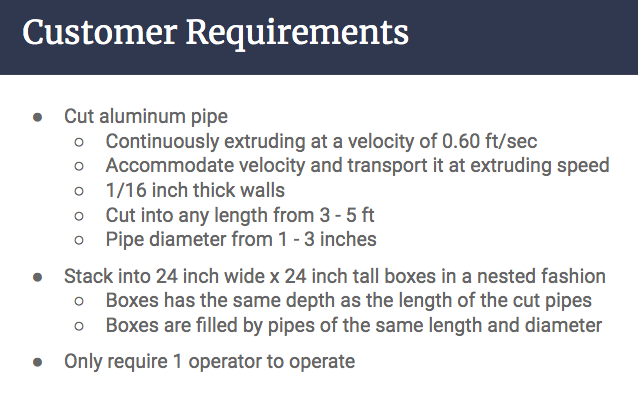 These customer requirements were then translated into functional requirements for the cutter design. 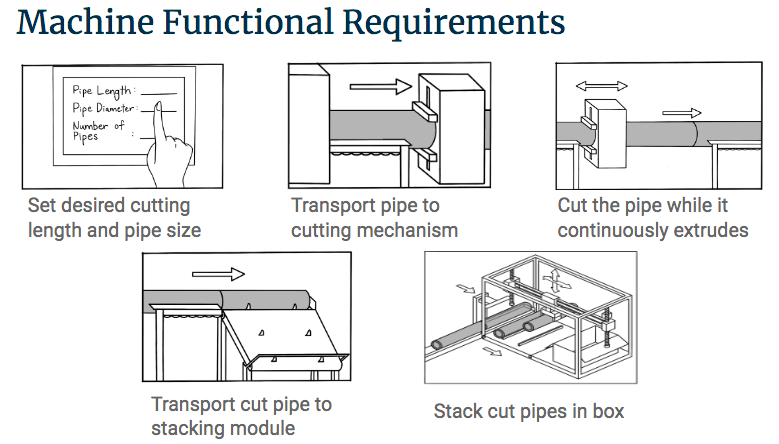 The three main functions were cutting, transport of cut pipes, and stacking. 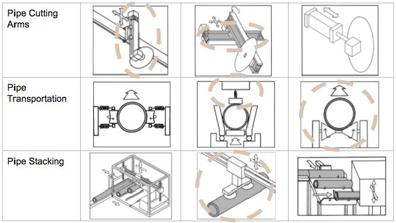 I designed around the cutting and transport of the pipes. CONCEPT SELECTION I used Pugh charts to select cutting and pipe transport methods (below) TRANSPORT METHOD The goal of the transport stage is to continously feed the pipe into the machine without damaging its surface. 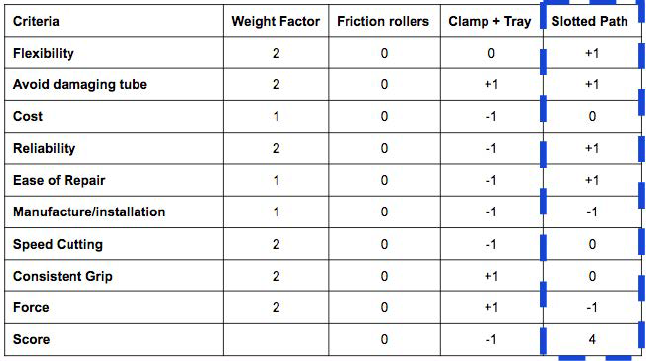 CUTTING METHOD The client specified that burrs from cutting were acceptable. 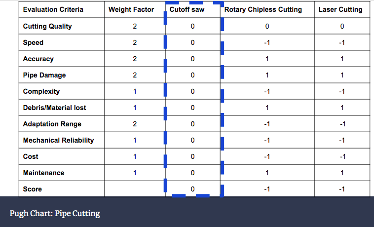 TRANSPORT DESIGN SolidWorks Model of Slotted Path Method: 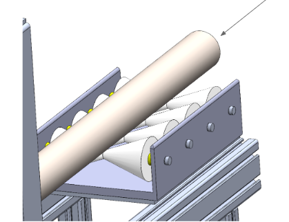 CLAMP DESIGN The transport and cutting stages were combined into a single design to reduce the footprint of the machine. 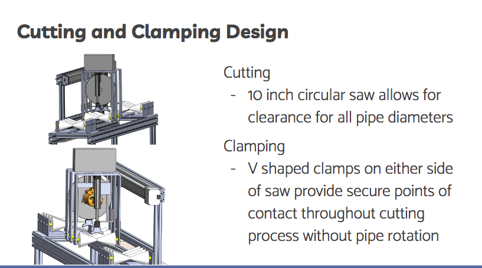 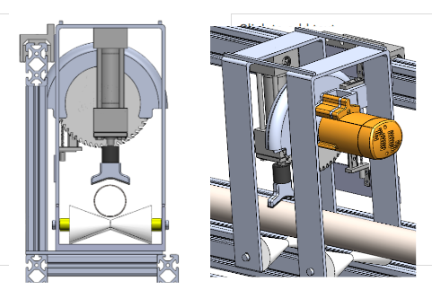 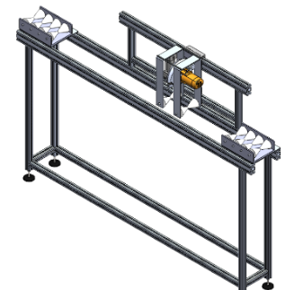 SAMPLE BOM 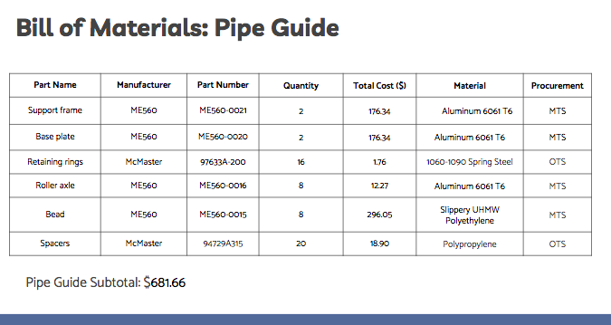 MOTOR REQUIREMENTS Based on the dimensions of the machine components, Motor requirements were compiled below: 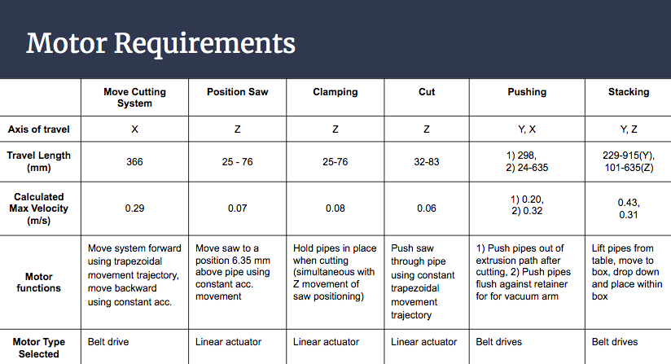 FINANCIAL ANALYSIS 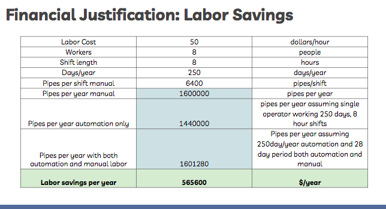 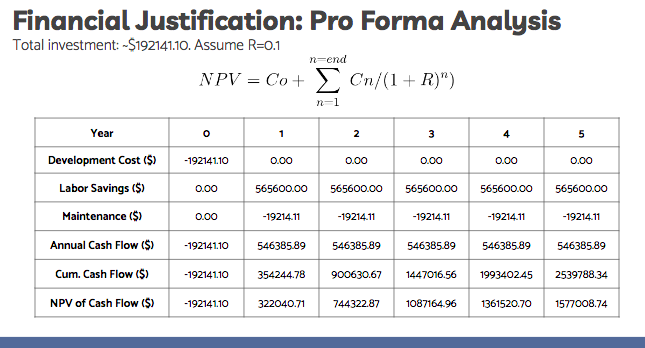 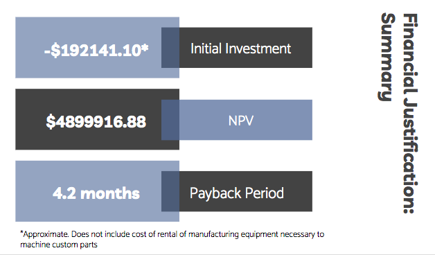